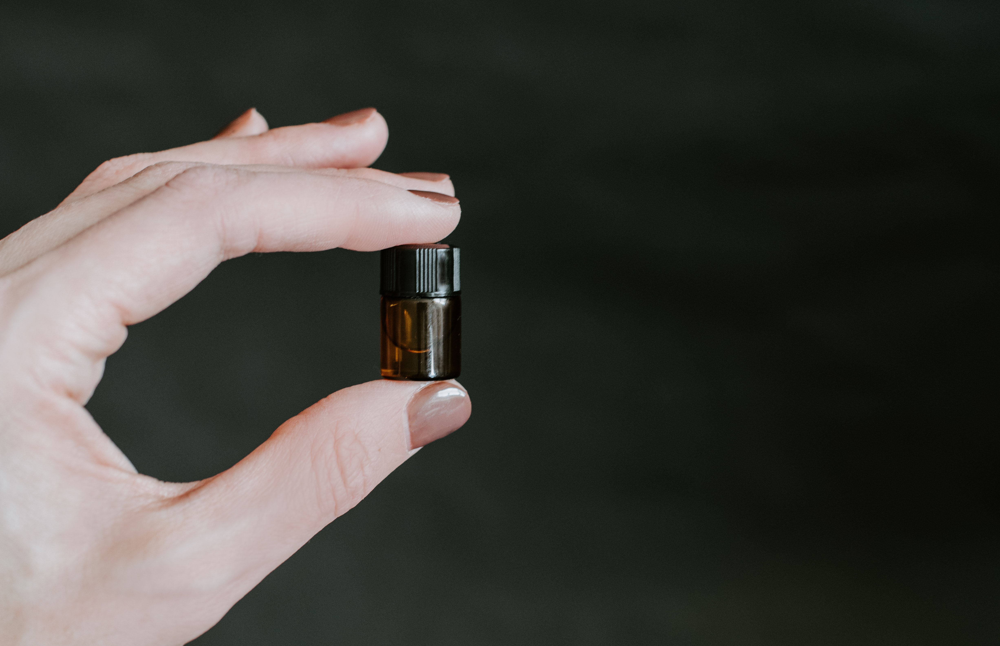
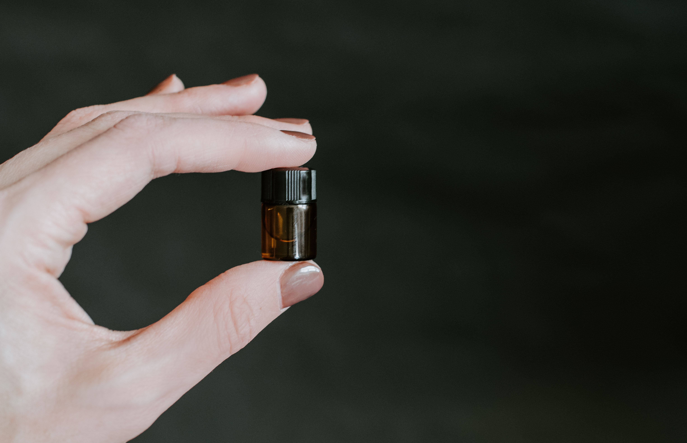

グレープフルーツ・グリーンマンゴー
ナイルの壮大で豊かな自然にインスパイアされた、エルメスの「庭園のフレグランス」シリーズで最も人気を誇る香水です。 フレッシュなトップノートで立ち上がり、ミドルノートではイグサやシカモアウッドが癒しのグリーンノートを放ちます。ラストはウッディが安らぎを演出します。 香水文化がヨーロッパほど根付いていないアジア圏をターゲットに作られているため、とても軽やかなフレグランスに仕上がっています。そのため透明感があって万人受けしやすく、ユニセックス香水の中でも定番とされています。


 



香りのタイプ
香り系統の分類は、ドイツの香料会社ハーマン＆ライマー社(現シムライズ社)の分類表が有名です。各時代のマイルストーンになった代表的な香水製品・香水作品とその香りのタイプ分類が明記されており、国際的な分類基準のひとつになっています。多くの香水評論家や香水の本で取り上げられる分類表はハーマン＆ライマーの分類表を参考にしたものが多いと思われます。当社では一般的な分類として下記リストに合わせてフローラル・フォーシーズンズ香水シリーズ各アイテムを分類しており、さらに自社独自の「種類グルーピング」を行っております。


シーン
マリンノート(マリン・タイプ)やアクアノート(アクア・タイプ)とも呼ばれる。ニューケミカル・カロン(キャロン、キャローン)を配合した海や洗濯物など水をイメージさせるみずみずしい香り。スイカやメロンの皮の水分が多い部分のような匂いと表現されることもある。朝露や森林の清涼な空気、透明感のあるピュアでナチュラルな香りとも言われることがあるが、そこまで表現するのは誇張です。


イメージ
ムスク(ジャコウジカ)、シベット(ジャコウネコ)、アンバーグリス(マッコウクジラ)、カストリウム(ビーバー)など動物由来の香料。世界的にそれら動物の捕獲、及びそれらからの香料採取、及びそれら香料の取引は完全に禁止されつつあります。とくにムスクは香水には必須の成分でムスクタイプとして独立して分類する人もいます。ムスク(合成香料)を使用した香水(天然ムスクは使用禁止)は甘く暖かくセクシーな香りと言われます。
Mawkusとは？
mawという語は日常語としては香気の意味をもつ。もっぱら「いいにおい」に限って用いられるようである。それでアイヌの古老に聞くと、たいていo（そこを）maw（いい香りが）kus（通っている）ni（木）と解しているようで、「いいにおいを出す木」の意味